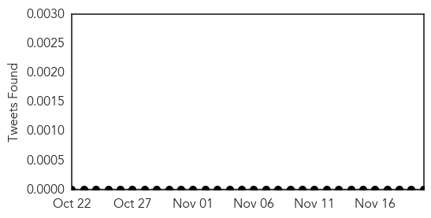
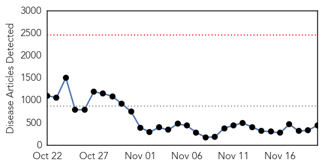
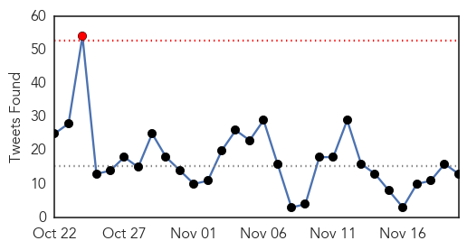
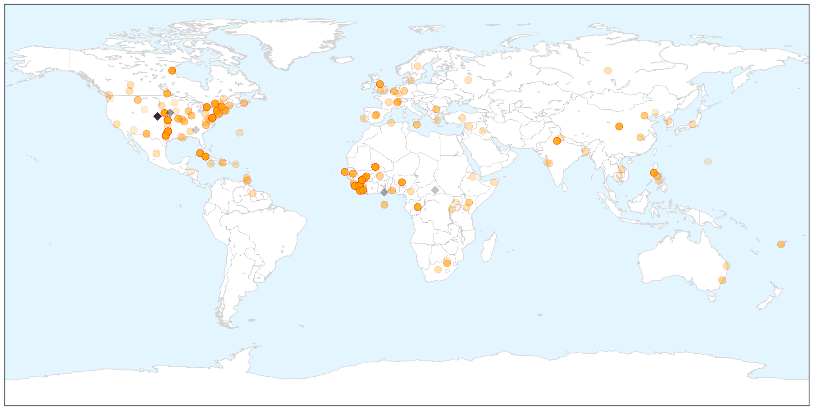
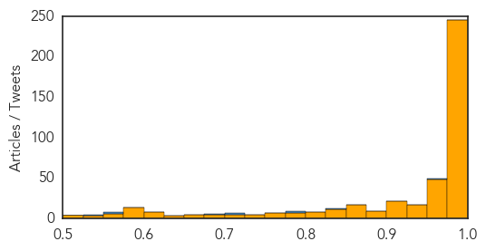

Mumps
30-Day Web Trend
30-Day Twitter Trend
0 alerts, 0 warnings

Article Locations


Article Confidences

Top Articles:
-
No articles found for Nov 20, 2014
Top Tweets:
-
No tweets found for Nov 20, 2014
Ebola
30-Day Web Trend
0 alerts, 0 warnings

30-Day Twitter Trend
1 alerts, 0 warnings

Article Locations
X

Article Confidences
Top Articles:
- 1.000
- Cuban doctor sick with Ebola to be flown to Geneva for treatment
- 1.000
- Ebola death toll rises to 5420
- 1.000
- Chronology: Worst Ebola outbreak on record tests global response
- 1.000
- Will Ebola be the last straw?
- 1.000
- Vermont health officials monitoring two who visited West Africa
- 1.000
- Ebola death toll rises to 5 420 - WHO
- 1.000
- Worst Ebola Outbreak on Record Tests Global Response
- 1.000
- Medical center prepared for Ebola
- 1.000
- Out of Africa ... HIV, Ebola, ??
- 1.000
- Is quarantine merited for Ebola-exposed health-care workers? The science says no
- 1.000
- Even small clusters of Ebola cases could overwhelm parts of US medical care system
- 1.000
- As a bad virus reaches the big city, some questions and answers about hazards from Ebola
- 1.000
- What you need to know now
- 1.000
- 5 assumptions that aren't true
- 1.000
- Without exit screening, 3 Ebola cases per month might fly out of West Africa
- 1.000
- Supportive care gives body time to fight the virus but not the only factor in survival
- 1.000
- Health officials fear Ebola may become the new AIDS, but experts note many differences
- 1.000
- UN health agency officially declares an end to the Ebola outbreak in Senegal
- 1.000
- Ebola virus preparations stepped up in Ontario
- 1.000
- Ebola training for Saskatoon health-care workers to start next week
- 1.000
- Priority is stopping it at the source, CDC head says
- 1.000
- As government steps up Ebola response, CDC discloses nurse allowed to fly before diagnosis
- 1.000
- US government acknowledges it could have done more on Ebola, steps up response to disease
- 1.000
- 2nd health worker who tested positive for Ebola was in isolation within 90 minutes
- 1.000
- Nurses in safety gear can get Ebola, so why do health officials say other Americans are safe?
- 1.000
- Ebola cases to surpass 9,000 this week,' WHO says
- 1.000
- Ebola patient dies in Dallas; US announces closer screening of Africa travellers at airports
- 1.000
- Here's what you need to know
- 1.000
- When it's contagious, how it spreads and other things you need to know to stay safe
- 1.000
- Toronto Ebola Tests Ordered For Patient, Results Expected Friday
- 1.000
- Ebola virus discussed at health ministers' talks in Banff, Alta.
- 1.000
- Sierra Leone to cordon off 3 districts, quarantine houses in other areas to stop Ebola spread
- 1.000
- Ebola cases could reach 550,000 to 1.4 million in 4 months
- 1.000
- Cuban doctor contracts Ebola in Sierra Leone
- 1.000
- WHO report details Ebola cluster in Mali
- 1.000
- Patient in NYC who traveled to Mali tests negative for Ebola
- 1.000
- Patient in NYC who traveled to Mali tests negative for Ebola
- 1.000
- Vermont health officials monitoring two who visited West Africa
- 1.000
- Vermont health officials monitoring two who visited West Africa
- 1.000
- Centre may put curbs on entry of Ebola-hit people
- 1.000
- 'Ebola's impact on economy might be less than feared
- 1.000
- Sierra Leone Hit Hardest in Latest WHO Ebola Numbers
- 1.000
- Cuban Doctor Infected With Ebola Being Flown To Switzerland
- 0.999
- Blood, drugs, and vaccines: stopping Ebola is a multi-pronged effort
- 0.999
- The Sham, Scaremongering Guide to Ebola
- 0.999
- nine charts show why it matters
- 0.999
- Thousands in Sierra Leone are violating Ebola quarantine to find food
- 0.999
- How would public health officials trace an Ebola patient's footsteps?
- 0.999
- Ebola prep includes undercover actors and souped-up ambulances for disease that may never come
- 0.999
- Questions and answers about the US Ebola case
Showing top 50 articles...
Top Tweets:
- 0.961
- RT: Crise Ebola: Le Chef de la Mission des Nations Unies pour la lutte contre Ebola en visite au Mali http:…
- 0.835
- RT: Ebola : Médecin malien en traitement est décédé ce jour. Paix à son âme. Sincères condoléances à sa famille. 5 décès au to…
- 0.797
- Either we don't really know when the imam's friend developed Ebola symptoms or asymptomatic ppl can spread Ebola more than we think. 8/8
- 0.779
- RT: Stopping the Ebola epidemic in West Africa remains imperative to protecting global public health. http://t.co/yp5T8vl3xK…
- 0.707
- Watch DSTV 403 in South Africa for a special on Africa Stop Ebola
- 0.707
- RT: Mali "massive effort to id all potential chains transmission monitor contacts prevent Ebola outbreak frm growing" htt…
- 0.704
- RT: Mali: Details of the additional cases of Ebola virus disease http://t.co/4Ze4bI5y6C
- 0.694
- But OTOH if 57F didn't get Ebola from imam family or friend then wld imply undetected cases in network despite close monitoring
- 0.680
- RT: Mali 1 patient with Ebola who was being treated at MSF Center died today. 1 suspected patient is currently admitted in …
- 0.566
- CDCintheField from Dan: Local health official works w/ CDC epi to plot confirmed Ebola cases on district map. http://t.co/AuNswKpQ74
- 0.556
- RT: 6 Ebola cases and 5 deaths in Mali... more on West & Central Africa? read our new snapshot http://t.co/4Evif8gk8K http://…
- 0.539
- RT: [HUFFPOST] Ebola Spreading Intensely In Sierra Leone As Death Toll Rises: WHO http://t.co/xBGUgz2WGw EBOLANEWS
- 0.534
- MAP. UNHRD Response to the Ebola Outbreak as of 7 November 2014 ebolaresponse http://t.co/ePRqAWHeBq